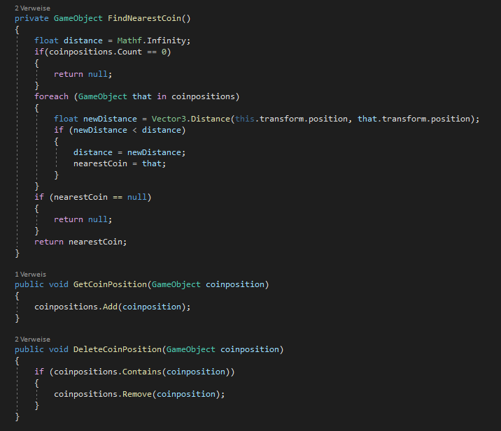
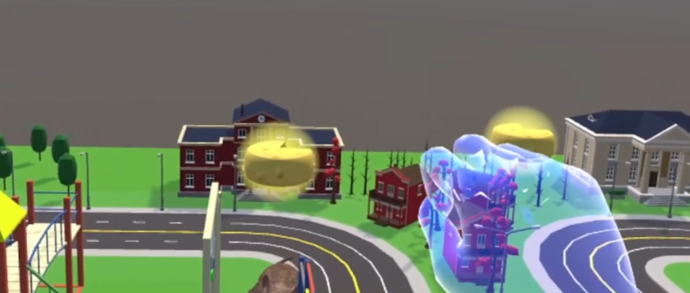

Zusammenfassung: Interaktion in Virtuellen und Augmentierten Welten
12 • 2403
In der integrierten Veranstaltung “Interaktion in Virtuellen und Augmentierten Welten” wurde als Prüfungsleistung ein Projekt gefordert. Dieses Projekt beinhaltete, dass jede*r Teilnehmer*in eine Meta Quest 2 zur Verfügung gestellt bekam und mit Hilfe dieser einen Parcour in VR erstellen sollte. Für den Parcour bekamen die Teilnehmenden eine Vorlage, in welcher “nur noch” die Locomotion Technique eingepflegt werden musste.
Der projektbegleitende Blog der während des Semesters erstellt werden sollte wurde, wie vorgegeben, mit Hilfe von Hugo erstellt und aktualisiert.
Die verwendeten Tutorials und das verwendete Template für Hugo finden sich unter den folgenden Links:
Zu beachten war hierbei, dass das “normale” Hugo kein CSS unterstützt und daher extended-Hugo verwendet werden musste.
Während die Installation von Hugo einige Tage Zeit in Anspruch nahm, war die Installation von Unity sehr schnell abgeschlossen.
Zu Einführung wurde als erstes ein kleines Übungsprojekt in Unity erstellt. Da ich bisher keine Erfahrung mit Unity hatte ist in diesem Projekt vor allem der Fokus auf meiner eigenen Weiterbildung und Sicherung von neu gelerntem Wissen. Natürlich mit Hilfe eines Tutorials , aber ohne dieses wäre das Verständnis zu Unity noch schwieriger gewesen zu bilden.
Ziel des ersten Projekts war es, ein Spielbrett zu gestalten, auf dem sich ein Ball und mehrere Würfel befinden. Indem man das Spielbrett mit den Controllern anhebt und zur Seite neigt, sollte der Ball in’s Rollen gebracht werden und während er rollte die Würfel einsammeln. Zusätzlich gab es einen Counter, welcher die Punkte die man gesammelt hat zählte und anzeigte.
Die Schwierigkeit hierbei war für mich, zu verstehen wie Unity überhaupt arbeitet, was beispielsweise eine ‘Scene’, ein ‘3D Object’, oder ein ‘Prefab’ ist. Ebenfalls musste man lernen, wie der ‘Inspector’ und die ‘Materials’ funktionieren und was die Begriffe ‘Transform’, ‘Renderer’, ‘Collider’ und ‘Rigidbody’ bedeuten und wie sie miteinander interagieren. Hilfestellung bot mir hierbei regelmäßig die folgende Tabelle:
Die mächtigsten Werkzeuge in Unity sind meines Erachtens die Scripts, welche man schreiben kann. Hierbei kann man so ziemlich alles Erdenkliche an Bedingungen, Verknüpfungen und Befehlen in sein Projekt einbauen und an die jeweiligen Objekte binden.
Nach ca. 10 Stunden Arbeit war das erste kleine Projekt bereits fertiggestellt.
Die nächste Aufgabe war es, die Quest in den Entwicklermodus zu bringen und das Setup auf dem PC so einzurichten, dass Daten von Unity auf die Quest übertragen werden konnten. Das war mit Hilfe von Tutorials ohne größere Probleme machbar. Stolperfallen gab es vor allem beim Übertragen der fertigen .apk. Wenn in Unity nicht vor der Übertragung die Project Settings geändert wurden, wirft die Quest einen Fehler, der im ersten Moment unsinnig erscheint. Ändert man jedoch den Company und Product Name sind diese Fehler behoben.
Mein Setup bestand aus einem VR-fähigen Laptop der via USB-Kabel und Oculus Link meine Projekte live gerendert hat. So musste ich nicht nach jeder Änderung eine neue .apk bauen und diese importieren.
Das erste Brainstorming zum Locomotion Technique Projekt ergab folgende Ideen meinerseits:
Ziel des Locomotion Projekts war es eine eigene Locomotion Technique zu entwickeln und diese so umsetzen, dass unsere Studienteilnehmer*innen den Parcour damit durchführen können. Hierfür wurde uns der folgende Parcour als Vorlage gegeben:

Hierbei sollten wir eine Möglichkeit implementieren, um die Spielfigur vorwärts zu bewegen und die Interaction Task zu erledigen. Im Parcour muss sich die spielende Person mit der neu entwickelten Locomotion Technique fortbewegen und Münzen sammeln, während sie in der Interaction Task das dargstellte T auf die leicht durchsichtige Fläche bewegen.
Die spielende Person muss nacheinander 4 Banner durchqueren. Das erste startet den eigentlichen Parcour (und damit auch den Timer). Mit dem Start des Parcours tauchen im ersten Abschnitt, also zwischen Banner 1 und Banner 2 Münzen auf, die eingesammelt werden müssen. Wird Banner 2 passiert taucht das nächste Set Münzen auf. Nach Banner 3 taucht das finale Set Münzen zwischen Banner 3 und dem finalen Banner auf. Kurz vor jedem Banner (ausgenommen dem ersten) gibt es jeweils eine Interaction Task, die immer wie oben dargestellt durchgeführt werden muss.
Ein erneutes Brainstorming, nach einigen Vorlesungseinheiten, ergab folgende Ideen:
Die Ideen ließen sich im Prinzip in drei Bereiche einteilen:
- Lernspiel
- Logiktraining
- Koordinationsspiel
Die folgenden fünf Ideen standen für mich am Ende des Brainstormings zur Auswahl:
- Lernspiel, bei dem sich Wissen angeeignet wird welches am Ende für Studienzwecke überprüft wird
- Lernspiel, das helfen soll Ekel, Ängste und Phobien abzutrainieren
- Logiktraining, welches kleine Rätsel beinhaltet
- Lernspiel, bei dem die Gebärdensprache spielerisch erlernt wird
- Koordinationsspiel, bei welchem die Koordination zwischen Füßen und Händen geübt werden soll
Im Bezug auf Cybersickness wurde dann entschieden, dass die spielende Person nicht ‘sich selbst’ in VR steuert, sondern eine virtuelle Ratte. Das Spiel legte den Fokus nun also auf ein Lernspiel, bei dem sich einerseits Ekel und Ängste abtrainiert und Wissen antrainiert wird.
Bei der Besprechung der Themen ‘Tracking Devices’ und ‘Controls’ habe ich für mein Projekt entschieden, dass der Parcour gänzlich mit Gestenerkennung umgesetzt werden soll. Bei der Überlegung diesbezüglich wurde beachtet, dass aufgrund der Gestenerkennung jede*r Teilnehmer*in die Möglichkeit benötigt mit der Hand mindestens sechs Gesten zu formen. Sofern die Person jedoch mindestens drei Finger an der rechten Hand besitzt ist das möglich. Ein Linkshandsupport war geplant, aber zeitlich leider nicht mehr umsetzbar.
Ein erstes Brainstorming bezüglich der möglichen Gesten ergab folgende Ideen:

Nachdem nun die grobe Idee für das Projekt feststand sollte diese auch den restlichen Seminarteilnehmern gepitched werden. Dies war der erste Pitch des Projekts:
Nach dem Feedback zur Projektidee konnte nun mit dem Projekt gestartet werden.
Step 1 war es, die Vorlage des Parcours in Unity zu laden und diese auf die passende Größe anzupassen. Da meine Projektidee darauf basiert, dass man nicht selbst die Spielfigur darstellt, sondern die eigentliche Figur per Gesten steuert benötigte ich einen Parcour der auf Rattengröße geschrumpft ist. Mit dem Wissen, das ich mir in den folgenden Wochen aneignen sollte, wäre diese Aufgabe innerhalb von kürzester Zeit gelöst gewesen. Da ich zu diesem Zeitpunkt allerdings noch nicht viel mit Unity gearbeitet hatte, nahm dieser Umbau einen kompletten Arbeitstag in Anspruch (und sollte zu einem späteren Zeitpunkt erneut wiederholt werden).
Step 2 beinhaltete den komplexesten Teil des Projekts - die Gestenerkennung. Hierbei hangelte ich mich zuerst an diversen Tutorials entlang. Trotz der Tutorials dauerte es mehrere Tage, bis ich eine funktionierende Posenerkennung hatte. Aus der geplanten Gestenerkennung wurde aufgrund der Umsetzbarkeit eine Posenerkennung, die keine Bewegungen beinhaltet, sondern nur die Pose der Hand zu einem bestimmten Zeitpunkt speichert. Die Posenerkennung funktionierte anschließend so, dass mir Unity in der Konsole Text ausgab, sofern es eine Handpose erkannt hatte.
Hand Tracking Gesture Detection - Unity Oculus Quest Tutorial von Valem
HAND TRACKING with the Oculus Quest - Unity Tutorial von Valem
Modified Gesture Detector for Hand Tracking - Unity - Oculus Quest von TotallyNotDevs
Die auskommentierten Zeilen sind die ursprüngliche Gestenerkennung aus den oben genannten Tutorials. Hieran lässt sich auch erkennen, wie viel von mir angepasst werden musste, um mein Projekt funktionsfähig zu bekommen.
Für mein Projekt musste zuerst noch eine passende Ratte gefunden werden. Hierbei wurde der Fokus darauf gelegt, diese Ratte nicht noch animieren, bzw. riggen zu müssen. Nach längerer Recherche fand sich folgende Ratte:
Animierte Ratte auf renderhub.com
Vorteilhafterweise kam sie direkt mit Animationen und war komplett gerigged. Ein Nachteil der Animationen war allerdings, dass die Ratte diese Animationen nicht auf der Stelle macht, sondern sich das Model tatsächlich bewegt, also die Position in Unity verändert wird. Hierauf musste geachtet werden, sobald es an die Bewegung der Ratte in VR ging. Es mussten nur noch alle Animationen geschnitten und passend benannt werden.

Der nächste Schritt war, die Ratte “auf Befehle horchen zu lassen”. Sofern der GestureDetector die Handposition für “Laufen” erkennt sollte also die Animation für “Laufen” abgespielt werden. Das gleiche gilt für “Mach Männchen”, “Aufheben”, “Links drehen”, “Rechts drehen” und “Such”.
- “Laufen” bewegte die Ratte nach vorne, bis die Handpose geändert wurde.
- “nach Links drehen” lässt die Ratte einen Bogen nach links laufen, bis die Handpose geändert wurde.
- “nach Rechts drehen” macht das selbe nach rechts.
- “Such” lässt die Ratte nach der nächsten Münze suchen und, falls eine in der Nähe ist, zu dieser laufen.
- “Mach Männchen” lässt sie auf die Hinterbeine gehen und diese Münze aufheben.
- “Aufheben” wird lediglich für die Interaction Tasks benötigt. Damit wird dann das T aufgehoben und mit der Drehung der Hand in die richtige Position gedreht.

Laufen, sowie links und rechts drehen waren recht schnell implementiert. Zu diesem Zeitpunkt war alles noch mit einem if-else modelliert, dies wurde später allerdings in ein switch-case geändert, um die Übersichtlichkeit zu wahren. Alle drei Befehle rufen die gleiche Funktion auf, mit dem einzigen Unterschied, dass eine Rotationsvariable verändert übergeben wird.

“Such” wurde mit Hilfe von weiteren Collidern, welche sich an den Münzen befinden, umgesetzt. Sofern die Ratte mit ihrem Collider die Münze und deren Collider trifft, wird die Münze in die Liste coinpositions hinzugefügt.

Die Funktion “findNearestCoin” kontrolliert dann, ob in der Liste eine Münze existiert und gibt die Position der Münze mit der kürzesten Distanz zur Ratte zurück. Dieser Rückgabewert ist dann die Position an die die Ratte bewegt wird. “Mach Männchen” setzt die Münze dann auf inaktiv und zählt den Counter hoch. “Aufheben” sollte ein komplexeres Thema werden und wurde zuerst einmal auf der ToDo Liste weiter nach unten gesetzt.

Da das Spiel als Lernspiel gedacht war, wurde die spontane Idee, die Münzen durch Käse zu ersetzen, umgesetzt und erweitert. Die Münzen wurden also alle in Käsestücke umgewandelt und an Stelle der Münzen befinden sich nun Textboxen mit Rattenfakten. Diese tauchen auf, sobald der dazugehörige Käse “gegessen” wurde. Um anschließend die Tipps im Spiel wiederfinden zu können wurden aus den Käsestücke Käseleiber. Sobald die Ratte den Käseleib “gefressen” hatte wurde dieser ausgeblendet und stattdessen ein Käsestück eingeblendet. Damit wurde nach dem Belohnungsprinzip gearbeitet und die Teilnehmer*innen, bzw. Spieler*innen werden mit Fakten “belohnt”, wenn sie die Ratte dazu bringen den Käse zu essen.


Nächster Fokuspunkt war es, die Handpose “Aufheben” mit der gleichnamigen Methode “Aufheben” zu verbinden und die Ratte das T-Stück des Interaction Tasks aufheben zu lassen. Zuallererst wurde das T, welches wir mit dem ursprünglichen Parcour erhalten hatten, durch ein Stück Käse ersetzt. Um nichts in der Hauptszene zu zerstören wurde in eine andere Szene gewechselt und dort die Funktion “Aufheben” erst einmal provisorisch implementiert. Da zu diesem Zeitpunkt auch getestet wurde, wie man ein Material auf einem 3D-Objekt ändert ist der Boden dieser Szene zu einer riesigen Käseplatte geworden.
Ziel war es, das Script MooveCheese.cs so zu bauen, dass der Spieler, wenn sich die Ratte im richtigen Bereich befindet, die Aufheben-Pose nutzt, um das Käsestück aufzuheben. Sobald er diese Pose nicht mehr hält soll der Käse losgelassen werden. Dies sollte auf Entfernung funktionieren, so dass die Ratte sich im Spielbereich auf den Käse zubewegt und sie den Käse mit dem Mund in die richtige Position bewegt. Die Bewegung des Käses war sehr schnell und leicht umgesetzt. Hierbei reichte es die Position des Käses um einen prozentualen Anteil der Verschiebung der Hand zu verändern. Die Rotation hingegen wurde komplex. Hier musste mit Quaternionen gearbeitet werden. Die Unity-Dokumentation sagt zu Quaternionen: “Ändere Werte nur, wenn du genau weißt was du tust.” Es gibt aber einige hilfreiche Funktionen auf Quaternionen - diese habe ich nur erst einmal nicht gefunden und versucht die Quaternionen händisch zu berechnen. Das hat auch funktioniert, allerdings nur um eine bestimmte Achse. Die ersten Versuche der RotateTheCheese() finden sich als Kommentar in der MooveCheese.cs..

Am Ende konnte mit nur einer Quaternionen-Funktion namens “EulerAngles” jede Rotation umgesetzt werden. Als diese Bewegungen alle in der Übungsszene funktionierten, wurde das Script an den Käse in der ‘richtigen’ Szene angehängt und funktionierte ohne Änderungen.
Für die eigentliche Lernumgebung waren bisher jedoch nur zwei Würfel “auf den Parcour gestellt worden”. Um das so zu gestalten, dass die Spieler*innen ohne lange Anleitung (meinerseits) erkennen können, was sie tun sollen, wurde während des “Lernens” der Parcour ausgeblendet und nur die Ratte und die zwei Lern-Würfel sichtbar gelassen. Der*Die Spieler*in sieht zu Beginn also folgende zwei Würfel.
Wird die Hand in den rechten Würfel gehalten, startet ein Timer. Nach 5 Sekunden wird die Handpose gespeichert. Anschließend kann im linken Würfel “bestätigt” werden, dass diese Pose so gefällt. Eigentlich sollte hier noch ein “Reset” Würfel eingebaut werden, dies war zeitlich aber leider nicht mehr machbar.
Wenn die Posen gespeichert wurden verschwinden die Würfel, die Ratte läuft zum Start des Parcours und die Umgebung erscheint.
Damit die spielende Person aber einfacher an die Würfel kommt und die Ratte jederzeit leichter beobachten, sowie die Texte einfacher lesen kann, wurde der Parcour erneut umgebaut. Die Person steht nun inmitten vom Tisch, auf welchem sich der Parcour befindet.


Nun wurden am Projekt nur noch ein paar finale Schliffe gemacht nachdem probeweise ein Proband den Parcour einmal durchlaufen hatte. Der Proband wurde natürlich nicht in die eigentliche Studie einbezogen.
Da die Abschlusspräsentation gehalten wurde, bevor die Miniaturstudie durchgeführt wurde, wurde das Logging erst nach der Abschlusspräsentation in das Projekt eingepflegt.


Das Einbinden des Loggings war dank JSON sehr einfach möglich. Diese kleine Funktion wird aufgerufen, sobald die Handposten gespeichert werden. Sie generiert eine .txt Datei für jede*n Probanden*in. In dieser Textdatei befinden sich die Daten für die gespeicherten Handposen mit den dazugehörigen Bewegungsnamen.
Die Studie bestand nur aus vier Participants, da sie nur im Rahmen des Seminars stattfinden und keine ‘richtige Studie’ darstellen sollte. Den Studienteilnehmer*innen wurden gebeten zu Beginn einen Fragebogen auszufüllen. Am Ende der Studie erhielten sie erneut den Fragebogen. Beide Fragebögen wurden für die Auswertung verglichen.
Es ergibt sich bereits bei der kleinen Gruppe aus zufällig gewählten Teilnehmer*innen eine leicht positive Tendenz bezüglich dessen, ob die Teilnehmer*innen eine Ratte anfassen würden und eine etwas stärkere positive Tendenz hinsichtlich des Wissens der Teilnehmer*innen über Ratten.
Aus der Auswertung wird erkenntlich, dass zwei von vier Teilnehmenden sich nun besser mit Ratten auskennen, wohingegen eine Person ihr Wissen nicht verändert hat und eine Person das Empfinden hat, das Wissen wäre schlechter als zuvor eingeschätzt. Ebenfalls lässt sich erkennen, dass eine Person Ratten nun eher ansprechend findet und sich bei drei Personen das Empfinden gegenüber Ratten nicht verändert hat. Es lässt sich also vermuten, dass das Spiel Menschen helfen könnte, ihre Abneigung gegenüber Ratten nach und nach etwas abzulegen. Ein wesentlicher Unterschied zu einer Begegnung in der “realen Welt” ist vorallem die Möglichkeit, die Ratte zu steuern und sie somit von sich fernhalten zu können.
Finale .apk zum Download: gettingUsedToRats